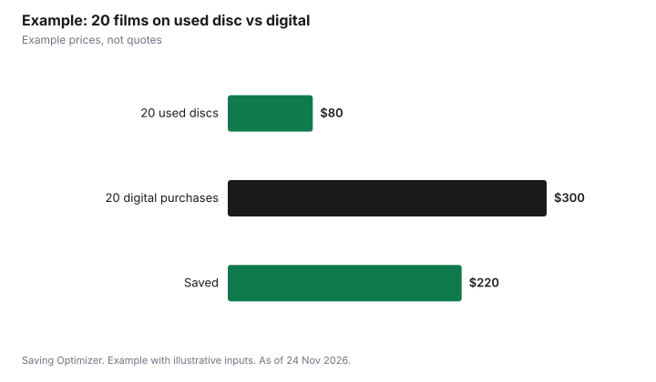

Entertainment · Canada
Used DVDs and Blu-ray: Cheap Physical Media

Used DVDs and Blu-ray discs are one of the cheapest ways to watch films you rewatch. Start at your public library, which lends discs for free; Toronto Public Library, for example, lends DVDs and Blu-ray. Then buy used at thrift stores, garage sales and used media shops. Check the disc for scratches and the region code before you pay, and buy only the films you'll actually watch again.
Key takeaways
- Borrow first. Many Canadian libraries lend DVDs and Blu-ray for free with a library card.
- Used discs at thrift stores and garage sales often cost a few dollars. Check the price against a digital sale.
- North American discs are DVD region 1 and Blu-ray region A. Discs from other regions may not play.
- A disc stays yours even when a film leaves a streaming service or a digital store loses a licence.
- Example: 20 used discs at an example $4 each cost $80, against $300 for the same films bought digitally at an example $15.
Library
Library loans cost nothing and let you test whether a film is worth owning. Place holds on new releases and check the loan period; Toronto Public Library posts loan periods by item type. Many libraries also offer free streaming services with a card. Our cheaper books guide covers holds and library apps.
Where to buy used
- Thrift stores and charity shops: low prices, mixed condition.
- Garage and estate sales: bulk lots can be very cheap.
- Used media and game shops: discs are often tested and may come with a short guarantee.
- Facebook Marketplace and Kijiji: bundles from people clearing shelves. Meet in a public place and check discs in person.
- Library and Friends of the Library sales: discarded discs, often for a dollar or two.
Checking a disc
- Look at the playing surface under light. Light hairline scratches often play; deep scratches and cracks may not.
- Check the case for the region code. North America is DVD region 1 and Blu-ray region A.
- 4K UHD discs need a 4K UHD player. Many 4K releases include a regular Blu-ray too.
- Digital codes in used cases are usually already redeemed. Don't pay extra for them.
- Ask to test the disc if the seller has a player.
Buy, stream or rent
Buy a disc only for films you'll watch several times. For one-time viewing, a library loan or a rental is cheaper. Our buy vs rent digital movies guide compares rentals, and digital vs physical games covers resale value.
Plan: an example collection
These are example prices, not quotes. You want 20 films you rewatch. Used discs cost an example $4 each; the same films bought digitally cost an example $15 each.

Used: 20 × $4 = $80. Digital: 20 × $15 = $300. You save $220, and you can resell or swap discs later. If you don't already own a player, add its cost; a basic Blu-ray player also plays DVDs.
Sources
- Toronto Public Library, Books, DVDs and Music (borrow DVDs and Blu-ray) and Borrowing Materials (loan periods), checked 24 Nov 2026.
Frequently asked questions
Where can I get cheap DVDs and Blu-ray in Canada?
Borrow from your public library first, then look at thrift stores, garage sales, used media shops, library sales and Marketplace.
Will a DVD from another country play in Canada?
Not always. North American DVDs are region 1 and Blu-ray discs are region A. Discs from other regions may not play on a North American player.
Do Blu-ray players play DVDs?
Yes, Blu-ray players play DVDs. 4K UHD discs need a 4K UHD player.
Is physical media cheaper than streaming?
For films you rewatch often, used discs can be cheaper over time, and they don't disappear when a licence ends. For one-time viewing, a library loan or rental is cheaper.
Can you borrow DVDs from the library?
Yes. Many Canadian libraries lend DVDs and Blu-ray, often with holds on new releases.
Researched and drafted with AI assistance and fact-checked against official Canadian sources. How we create content.
Note: Prices are examples. Check disc condition and region before you buy. Education only.